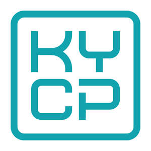

Trade Mark Journal No.2026/011 13 March 2026
UK00004345489 25 February 2026 (9,35,42)

- Class 9
- Computer software for biometric systems for the identification and authentication of persons; Computer software for business purposes; Computer software for scanning images and documents; Computer programmes for data processing; Downloadable computer software for the management of data; Downloadable computer software for the transmission of data; Computer programs [downloadable software]; Computer programs [downloadable software] for customer identity verification, customer due diligence and compliance management; Computer programs [downloadable software] for managing client lifecycle, client onboarding and regulatory compliance; Computer programs [downloadable software] for monitoring compliance with anti-money laundering and countering the funding of terrorism regulations; Computer software platform for screening services; Computer software platforms; Software applications.
- Class 35
- Automated data processing; Business file management; Collating of data in computer databases; Compilation and systematisation of information in databanks; Compilation of information into computer databases; Computerised business information processing services; Computerised business information retrieval; Computerised data processing; Computerised data verification; Computerized file management; Data processing verification; Electronic data processing; Information services relating to data processing; On-line data processing services; Business records keeping; Company record keeping [for others]; Office functions services; Advertising and marketing; Advertising, including on-line advertising on a computer network; Advertising; Design of advertising materials; Direct mail advertising; Direct market advertising; Dissemination of advertising material; Distribution and dissemination of advertising materials [leaflets, prospectuses, printed material, samples]; Distribution of advertising announcements; Online advertising; Preparation of advertising campaigns; Promotion [advertising] of business; Publication of advertising matter; Publication of advertising texts; Publicity and advertising; Radio and television advertising; Updating of advertising material.
- Class 42
- Computer programming and maintenance of computer programs; Creation, updating and adapting of computer programs; Design of computer software; Development of computer platforms; Development of computer software; Installation of computer software; Providing online, non-downloadable software; Software as a service [SaaS]; Software as a service (SaaS) featuring software for customer identity verification, customer due diligence, compliance management and fraud prevention; Software as a service (SaaS) for client onboarding, client lifecycle management and regulatory compliance; Software development, programming and implementation; Updating of computer software; Platform as a service [PaaS]; Platform as a service (PaaS) featuring computer software platforms for customer onboarding and verification.
Aqubix Limited